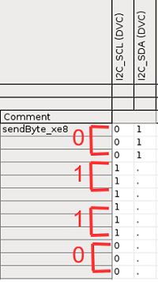
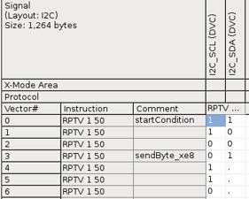
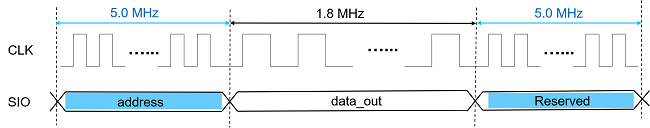

Automatic speed adaptation
Protocol speed is specified by getClockSpeed() in the protocol class. When the protocol speed is slower than the primary timing period, it is automatically adapted to the primary timing.
When this happens, protocol labels are padded to fit the protocol speed. The following two
examples illustrate the code and label padding.
| When the protocol speed is set to 1 MHz in the protocol class: | The timing period is 100 ns, the labels are padded as follows: |
class MyProtocolI2C_1MHz : public ProtocolI2C {
...
virtual std::string getName() const { return "I2C_1MHz"; }
virtual double getClockSpeed() const { return 1 MHz ; }
};
REGISTER_PROTOCOL(MyProtocolI2C_1MHz);
|
 |
| When the protocol speed is set to 50 KHz in the protocol class: | The timing period is 100 ns, the labels are padded as follows: |
class MyProtocolI2C_50KHz : public ProtocolI2C {
...
virtual std::string getName() const {return "I2C_50KHz";}
virtual double getClockSpeed() const {return 50 KHz;}
};
REGISTER_PROTOCOL(MyProtocolI2C_50MHz);
|
 |
Protocol speed change in transactions
Some protocols may require the protocol speed changeable. Some transactions need a higher speed at sending data while a lower one at receiving. The following image illustrates speed changes on the fly.
Example
To achieve the speed change, you need to set both change speed and restore speed for a
transaction in the protocol class. For example,
virtual double getClockSpeed() const {return 5.0 MHz;
virtual void defineReadRegister(SPI& spi, ULONG64 address, int numberOfData) {
// Normal speed at 5 MHz
spi.sendData(address, 16);
// Slow down the speed for shift out data
spi.changeSpeed(1.8 MHz);
spi.receiveData(0, 8, "data_out");
spi.restoreSpeed();
// Normal speed at 5 MHz
spi.sendData(0, 8); // Reserved
}Functional changes
- Introduced in SmartRDI 7.6.0